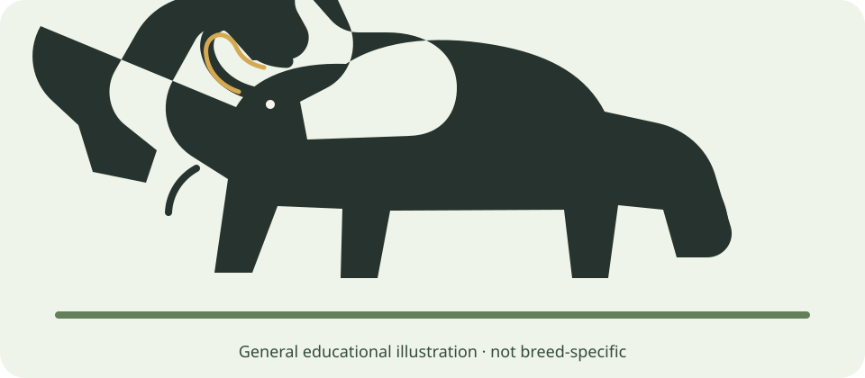

Why it matters
Godavari: ICAR-CIRB describes a breeding tract in East and West Godavari, including Tanuku, Bhimavaram and Narasapuram. It reports an average lactation yield around 2,050 kg over 305 days in cited population data, with other displayed historical reproductive figures. Treat these as breed-level historical references, not individual guarantees. Local adaptation and access make it a rational candidate to compare.
Practical guidance
Murrah: widely used dairy buffalo with home tract in Haryana; animals and graded animals may be available across India. Verify travel, heat management, udder, feet, lactation and records. A “graded Murrah” seller description does not establish ancestry without records.
Use this safely
Other registered breeds include Nili-Ravi, Jaffarabadi, Mehsana, Surti, Bhadawari, Nagpuri, Pandharpuri, Toda and newer officially registered populations. Their home tracts and traits differ; distant sourcing adds transport, adaptation and biosecurity costs. For this farm, compare Godavari-type local stock and Murrah/graded Murrah based on verified performance and veterinary inspection, not a blanket winner.
Local application
Request breed documentation, ear tag/identity, parentage where available, calving and lactation records, vaccination notes, and the seller’s actual location. Obtain a veterinarian’s independent examination and measure actual milkings before purchase.

Registered breeds and regional types
Registration and tract identify a population; they do not certify an individual animal's ancestry or performance. The live ICAR-NBAGR registry is the authority for formally registered breeds. Godavari is described in the ICAR-CIRB profile as a local breeding population/type and is not shown on that NBAGR registry list. “Graded Murrah” is a seller description of cross/upgraded ancestry, not a separate registered breed entry.
| Name | Registry type | Official home tract | Accession / status | Profile |
|---|
Milk yield, fat, weight, lactation, fertility, price, availability and suitability are not filled here unless a linked primary profile supports a specific claim. Do not infer these values from a breed name.
For a beginner near Bhimavaram or Tanuku, it is reasonable to compare locally available Godavari-type animals with Murrah/graded-Murrah offers because transport and regional availability may differ. That is a sourcing hypothesis, not a breed recommendation: select using identity, independent health examination, records, multi-day observed yield, buyer settlement terms and total delivered cost.
Sources: ICAR-NBAGR: current Buffalo Breeds of India registry · ICAR-CIRB: Godavari profile